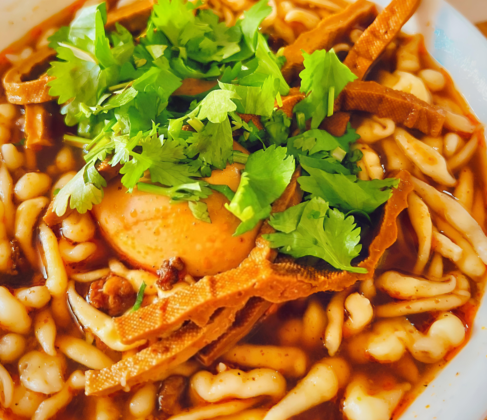
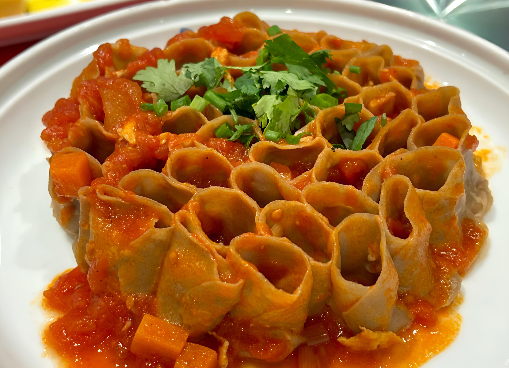
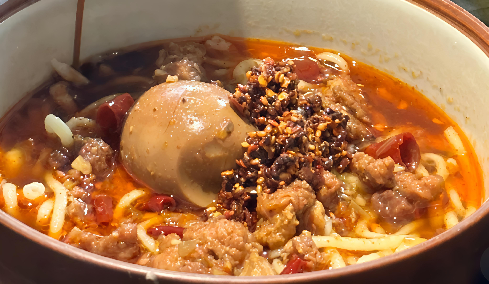

刀削面是大同最著名的面食之一，以其独特的制作工艺闻名。厨师将面团托在左臂上，右手持特制的弧形刀，飞快地将面一片片削入沸水中。削出的面条中厚边薄，棱锋分明，形似柳叶，入口外滑内筋，软而不粘，越嚼越香。
刀削面的浇头多种多样，有西红柿鸡蛋、炸酱、羊肉臊子等，配上山西老陈醋，味道鲜美无比。刀削面不仅是一种美食，更是一门艺术，2008年被列入国家级非物质文化遗产名录。
抿八股是大同地区特有的传统面食，因制作时使用有八个孔的特制工具"抿床"而得名。将和好的面团放在抿床上，用手掌抿压，使面条从孔中挤出落入沸水中，形成短小的圆柱形面条。
抿八股口感滑嫩筋道，易于消化，常配以羊肉汤、豆腐、土豆等食材。这种面食制作简便快捷，是大同人家常便饭的代表，体现了山西人粗粮细作的饮食智慧。

莜面栲栳栳是大同地区极具特色的粗粮面食，主要原料是莜麦面。制作时将莜面搓成细条，再盘成小卷，形似蜂窝，故得名"栲栳栳"（当地方言称"蜂窝"为"栲栳"）。
莜面栲栳栳蒸熟后口感筋道，带有莜麦特有的香气，常配以羊肉臊子或酸菜汤食用。这种面食营养丰富，富含膳食纤维和微量元素，是健康养生的佳品。

块垒是大同地区独特的传统面食，又称"疙瘩汤"。制作时将面粉加水调成稠糊状，用筷子或勺子拨成不规则的小块直接下入沸水中煮熟，形状各异，大小不一，故称"块垒"。
块垒口感软糯，易于消化，常配以西红柿、土豆、豆腐等蔬菜做成汤食，是大同人冬季暖身的家常美食。这种面食制作简单快捷，体现了山西人粗粮细作、勤俭节约的饮食文化。
压豆面是大同地区的传统杂粮面食，以豌豆面和小麦面混合制成。制作时使用特制的压面床，将面团挤压成细长的面条直接入锅，面条呈淡黄色，带有豆类特有的香气。
压豆面口感滑爽筋道，营养丰富，蛋白质含量高，常配以羊肉汤或酸菜豆腐食用。这种面食体现了大同人善于利用杂粮、注重营养均衡的饮食智慧。
大同面食文化源远流长，这些特色面食不仅是当地人的日常饮食，更承载着丰富的历史文化内涵，展现了山西面食的多样性和独特魅力。
